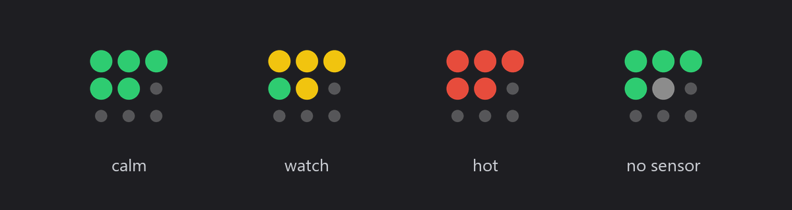

A 3×3 dot matrix in the Windows tray
- Nine dots, five metrics, four idle slots. Each dot is green, yellow or red against its own threshold — no window, no dashboard, nothing to open.
- Every metric is really a rate: (now − last) ÷ elapsed. The counters are monotonic totals, not readings.
- Windows has no user-mode CPU temperature API, so the app tries five sources in priority order and shows which one answered.
- Calibration beat guessing: 987 MB/s write, 2.4 GB/s read, and ~120 Mbps of real internet behind an 866 Mbps Wi-Fi link.
- A desktop app needs the boring parts too — single instance, a config file, autostart, and no busy loop.
1. The shape of the thing
A tray icon is the smallest UI Windows gives you: 16×16 logical pixels at 100% scaling, and a tooltip. Good enough for nine dots and a traffic-light palette.

Five of the nine cells carry a metric, the rest are dimmed so the grid still reads as a grid:
| Dot | Metric | Severity is based on |
|---|---|---|
| top-left | CPU | utilisation % |
| top-middle | RAM | utilisation % |
| top-right | Disk | read + write MB/s vs a reference |
| middle-left | Network | busier direction, Mbps vs a reference |
| middle-middle | Temperature | absolute °C |
The layout is data, not code — a 3×3 array in config.json where null
marks an idle cell. Moving a metric is editing JSON, not redrawing anything.
2. The whole app is a two-second interval
There is no server, no database, no render pipeline. One background thread wakes up every two seconds and does four things:
- Sample counters with
psutil. - Build an immutable
Snapshotdataclass — the entire state of the app. - Map each value to a colour and paint a 64×64 RGBA canvas with Pillow.
- Assign the result as the tray icon and refresh the tooltip.
snapshot = sampler.sample()
self.icon.icon = render_icon(snapshot, config)
self.icon.title = tooltip_text(snapshot, config)
self.icon.update_menu()That is the entire repaint. Think of icon.icon as the one DOM node you own, and the
assignment as render(). The Win32 message loop lives inside pystray and
blocks the main thread, which is why the sampler runs detached — same rule as never blocking an
event loop with a synchronous call.
Temperature is deliberately on its own thread with a slower clock (10 s). Shelling out to PowerShell for a sensor read can take a second; it must never delay the two-second tick.
3. Rates, not readings
CPU and RAM percentages arrive ready to use. Disk and network do not: the OS exposes cumulative byte counters that only ever increase. A “reading” of 412 GB tells you nothing about right now.
elapsed = now - last_at
read_mbps = (disk.read_bytes - last_disk.read_bytes) / elapsed / 1_000_000Two details make this honest. The first sample is thrown away (no previous timestamp), and bytes are converted with 1,000,000 per MB so the numbers line up with what Task Manager reports.
Then each rate becomes a percentage of a reference — the throughput that counts as 100% for this machine — and gets bucketed:
if value >= crit: return RED # 85% of reference
if value >= warn: return YELLOW # 60% of reference
return GREENThis is the same normalisation a web dashboard does when it shows CPU as a percentage instead of raw ticks: pick a denominator, clamp at 100, colour the bands.
4. Temperature is a scavenger hunt on Windows
macOS and Linux expose sensors to user space. Windows does not — the honest answer is “install a kernel driver”. So the app tries five sources and keeps the first that answers:
| Priority | Source | What it tells you |
|---|---|---|
| 1–2 | LibreHardwareMonitor / OpenHardwareMonitor WMI | CPU package, per-core, GPU — the real die temperature |
| 3 | ACPI thermal zone via WMI perf class | Chassis zone; no admin needed, but it barely moves with CPU load |
| 4 | MSAcpi_ThermalZoneTemperature |
Same zone through the ACPI provider; usually needs elevation |
| 5 | nvidia-smi |
GPU temperature, when an NVIDIA card exists |
Inside LibreHardwareMonitor the selection is itself ordered: CPU package, then any core, then GPU, then whatever is hottest. The tooltip names the winner, so a reading is never anonymous.
Two traps worth stealing. First, Get-Counter '\Thermal Zone Information(*)\Temperature'
is localised — the counter path differs on a non-English Windows. The WMI class
Win32_PerfFormattedData_Counters_ThermalZoneInformation returns the same number with a
stable name. Second, that zone reported 55–60 °C on this laptop at idle and did not move under a
synthetic load, which is exactly why the priority chain exists instead of trusting one source.
5. Calibrate against reality
The first version compared network throughput to the Wi-Fi link rate: 866 Mbps. Red would never have happened. A ten-minute benchmark fixed the denominators.
| Measurement | Result | How |
|---|---|---|
| SSD sequential write | 987 MB/s | 1 GiB, 8 MiB blocks, unbuffered + write-through |
| SSD sequential read | 2472 MB/s | same file, FILE_FLAG_NO_BUFFERING |
| Internet, single stream | 78–91 Mbps | 100 MB file over HTTPS |
| Internet, four streams, four CDNs | 110–123 Mbps | aggregate, 8 s window |
| Upload | 41 Mbps | 16 MB POST |
| Wi-Fi PHY rate | 866 Mbps | advertised link speed |
Unbuffered I/O matters here — with the OS cache in the way you measure RAM, not the SSD. And a single HTTPS stream is a poor estimate of a link: spreading downloads across four CDNs produced ~50% more throughput than any one of them.
Final references: 1000 MB/s for the disk dot and 120 Mbps for the network dot. Yellow starts at 60% — 600 MB/s, 72 Mbps — red at 85%, which on this machine means a saturated SSD or a genuinely maxed connection.
6. Small traps, desktop edition
- The venv
pythonw.exeis a redirector. Starting the app from.venv\Scripts\pythonw.exeshows two processes in Task Manager: a stub and the base interpreter it launches. One app, two PIDs — worth knowing before you “fix” a duplicate. - Killing the process leaves a ghost icon. Windows only removes a notification icon when the app asks it to; a hard kill leaves it behind until you hover over it.
- Two copies fight over one icon slot. A named mutex makes a second launch exit quietly — the desktop equivalent of failing to bind a port.
- The shell scales your icon. It is drawn at 64 px and downsampled by Windows, which is why the dots stay round at 16 px instead of turning into mush.
- Idle cells are drawn smaller, not darker. A faint white dot disappears on a white or a light-grey taskbar; a smaller grey dot reads on both.
7. Run it
Python 3.10+, three dependencies (psutil, Pillow, pystray),
and a script that builds a virtualenv, drops a shortcut in Startup, and launches the tray app:
.\install.ps1 # build, install, autostart, run
.\install.ps1 -Restart # reload after editing config.json
.\uninstall.ps1 # stop it and remove autostartThresholds, layout, sampling interval and the two reference values all live in
config.json next to the app. The 3×3 grid is the whole UI, and that turned out to be
the point: once a metric is reduced to a colour you can put it where you already look, instead of
opening a dashboard to check whether the machine is happy.
Sources: psutil documentation, giampaolo/psutil, moses-palmer/pystray, LibreHardwareMonitor. Code: nttung997/taskbar-sysmon (private for now).